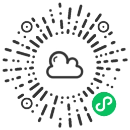
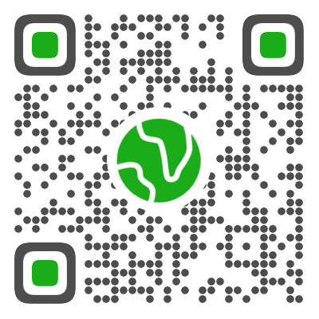
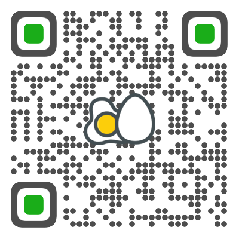

容 新
- 男 | 1998年 | 广东·广州
- 手机 - 13380993307
- 邮箱 - Yungsun3307@163.com
- GitHub - https://github.com/Yung-Sun
专业技能
- 熟练掌握 HTML 和 CSS 及 SCSS ，熟悉Flex布局，审美良好，具备还原设计稿的能力；
- 掌握原生 JavaScript ，熟悉ES6语法；
- 熟悉 jQuery 及 Vue 框架，了解移动端兼容，并独立开发过项目，以下开发项目均适配移动端；
- 独立开发过微信小程序；
- 使用过 Yarn / Npm / Git 等管理工具；
- 有较强自学能力，学习笔记记录在博客（已有超过40篇笔记）
- 有外企管培生经验，善于沟通交流，能阅读英语材料。
项目经历
容先生天气
一款独立开发的微信小程序，使用第三方的天气api，获取用户定位，传给后台获取天气数据。对后台返回的数据进行处理，渲染到页面，并使用wxCharts制作折线图，方便用户分析未来天气。
该项目涉及用户定位权限获取，wx.request获取数据，wxCharts制作图表，下拉刷新，组件封装等相关技术。

Goduing 导航
该项目使用JQuery，实现可自定义的导航网站，并适配了移动端。加入了百度搜索功能和数据本地存储功能，加深了对浏览器Storage的理解。
主要技术栈为 JQuery / HTML 5 / CSS 3 / LocalStorage。
(建议使用手机浏览器) 
示蛋 UI
一款基于 Vue / TypeScript / Webpack 的 UI 框架。主要组件有 Switch开关、Button按钮、Dialog弹出框、Tabs标签等。
包括示蛋UI主页，从设计到实现均为本人独立完成，主要技术栈为 Vue 3 / TypeScript 3 / Vue Router3 / SCSS 。
(建议使用火狐浏览器) 
开源项目
工作经历
艾利丹尼森 - 柏盛包装有限公司 2019.11-2021.3
TOP管培生
艾利丹尼森是美资500强企业，标签印刷行业龙头企业。2019.11-2020.6为实习期，2020.7转正，主要负责样板单的跟进，处理潜在的投诉问题，优化现有生产流程。跨部门协助跟进生产流程优化改善项目，共计年节省成本达 30,000 USD/Y。
教育经历
仲恺农业工程学院 2016.9-2020.6
全日制本科 化学工程与工艺专业
语言：粤语 | 国语 | 英语